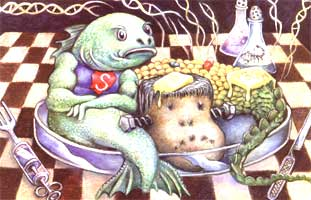
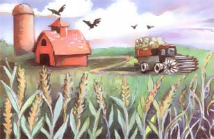

Advocates of genetically engineered food claim this revolutionary new technol ogy is merely a more precise way to improve crops-something humans have been doing for the last 12,000 years. They don't usually acknowledge that genetic engineering gives humankind an unprecedented ability to create new life-forms by taking genes from one species and inserting them into another-something longtime biotech critic Jeremy Rifkin characterizes as "a laboratory-conceived second Genesis." This is a powerful new technology and before we accept it, we must understand both its proponents' claims and the risks it poses.
The first large-scale commercial plantings of genetically modified (GM) [also referred to as genetically engineered (GE)], crops began in 1996. Although public debate and opposition to GM food has been both intense and growing throughout the world, most Americans have only begun to become aware of the issue. Nevertheless, the technology is developing quickly, and the pressures to continue using it are great. Once genetically modified organisms (GMOs) which can grow, reproduce, mutate and migrate-are released into the environment, they cannot be removed. So before scientists and corporations remake the natural world, we would be wise to fully consider the implications GMOs raise about health and environmental safety, politics, social justice, food security and economic issues.
Agricultural biotechnology is being sold on several promises. Genetic modification of food, we are told, will enable us to save a growing world population from hunger and starvation. It will give farmers more environmentally friendly, profitable and nutritious crops to grow. Agricultural biotech will revolutionize the way we get our industrial materials, turning plants, animals and other living organisms into clean "biofactories," replacing polluting products like nonrenewable fossil fuels and synthetic chemicals.
These are all laudable goals. But whether agricultural biotechnology will achieve them or whether it will unleash greater problems than those generated by the polluting technologies it is purported to replace are questions that remain unanswered.
Four farm products-corn, soybeans, cotton and canola-currently account for nearly all of the estimated 125 million acres of biotech crops commercially grown around the world. Dairy products have also been transformed by genetic engineering; 10 percent to 30 percent of our dairy cows are injected with the controversial recombinant bovine growth hormone (rBGH) to boost milk production.
GM corn, soybeans and cotton carry genetic material from petunias, viruses and bacteria that enable them to survive dousing with Roundup (glyphosate), the herbicide produced by biotech and chemical giant Monsanto. Other varieties of corn, canola and cotton contain genes from Bacillus thuringiensis (Bt), a natural soil bacterium that kills certain insects. Every cell of the altered plant is engineered to contain Bt, rendering the plant itself an insecticide (and it is registered as such). Other transgenic (genetically modified) crops currently approved, though not necessarily on the market, include herbicide-resistant sugar beets; virus-resistant papayas and squash; tomatoes engineered
with added bacteria and virus genes to delay their ripening; Bt- and virus-resistant potatoes; soybeans and canola with altered oil content; and herbicide-resistant flax.
In the United States, unless you consciously act to avoid GM foods, you are almost certainly eating them every day. Sixty percent to 70 percent of the products on supermarket shelves contain ingredients unlabeled as being derived from GM corn, soy, canola and/or cottonseed. According to the Union of Concerned Scientists, hundreds more genetically engineered animals, plants and microbes are in the biotech industry's research pipeline. Some likely to make their way onto people's tables within the next few years include transgenic fish, chicken, rice, wheat, coffee, apples, lettuce and peanuts.
The first wave of GM seeds conferred traits designed to make the crops easier for farmers to grow. The second and third waves augur something altogether different. In an attempt to offer products consumers can get excited about, nutrient levels in various foods are being genetically manipulated to boost or add vitamins, minerals and other substances thought to he healthy. The most well-known example is "Golden Rice," which has vitamin A not normally found in rice-added.
Biotechnologists also are researching ways to introduce pharmaceutical and industrial com pounds into crops. Transgenic corn and soybeans that produce veterinary vaccines and antibiotics already have been developed and grown at public agricultural research stations in the Midwest. These applications worry many farmers, since transgenic traits don't stay put once they are released into the environment, and so these compounds could end up in our food.
In an attempt to tackle this problem, the biotech sector is busy working to create plants that produce seeds that won't germinate, the so-called "Terminator" technology. Biotech companies also are researching ways to genetically disable key plant functions so plants won't be able to develop normally without being sprayed with a special chemical the company also happens to sell. Such plants have been dubbed "traitor" technology. or "junkie seeds."
Biotech proponents claim that transgenic Terminator plants won't spread their traits to nearby crops or related wild plants, because the Terminator plants don't produce viable seeds. The problem is, this suicidal characteristic could contaminate neighboring non-GM crops via cross-pollination. Farmers who have not elected to plant GM seeds, but who engage in the time-honored practice of saving their own seed, would be out of luck. Terminator was first developed as a way to protect biotech companies' intellectual property, and it continues to spark outrage around the world.
Terminator and traitor technologies are much more complicated than any transgenic crops on the market today-, and it is not clear how well they will work, says Hope Shand, research director of the action group on Erosion, Technology and Concentration, a nonprofit organization advocating sustainable uses of technology. According to Shand, patents on Terminator and traitor technologies have been issued to Monsanto, DuPont, Syngenta, BASF, Delta Pine Land Co., the U.S. Department of Agriculture, and Cornell, Iowa State and Purdue universities, for use in Canada, several European countries, Australia, South Korea and South Africa.
The biotechnology industry and its promoters claim GM food is perfectly safe and has been thoroughly tested. However, the U.S. Food and Drug Administration does not require safety tests for transgenic food before it goes on the market. Instead, biotech companies have been doing their own evaluations and presenting summaries to the FDA in a "consultation process." This procedure came out of the agency's 1992 decision to regard gene-spliced food as "substantially equivalent," -i.e., no different than food produced through conventional breeding techniques. This characterization allowed the FDA to classify transgenic food as "generally recognized as safe," which does not require pre-market safety testing.
Last year, the FDA changed its tune and announced a new policy that acknowledges transgenic food is different. The agency now requires data from biotech companies about each genetic modification, though FDA officials have not announced how they will use that information in their decision-making, says Michael Hansen, a biologist with the Consumer Policy Institute, which is part of the Consumers Union.
Meanwhile, a growing chorus of scientists are challenging the concept that GM foods are "substantially equivalent" to conventionally bred foods. According to Richard Lacey, a British medical doctor and microbiologist who specializes in food safety, genetic engineering is not only "inherently risky" but also "substantially different" from natural breeding methods, which involve sexual reproduction between the same or closely related species. With natural breeding, "every gene remains under the control of the organism's intricately balanced regulatory system," Lacey says in a deposition for a lawsuit against the FDA for releasing untested GM food into world markets. "The substances produced by the genes are those that have been within the species for a long stretch of biological time."
With genetic engineering, biotechnologists take cells that were produced with normal reproduction methods and randomly insert foreign genetic material into them. "This always disturbs the function of the region of native DNA into which the material wedges," Lacey says. Foreign genes won't become activated in their new home by themselves, so other gene., known as promoters, must be included to try to make sure the gene functions in its new environment. These genes usually come from viruses or bacteria. "Marker genes, which commonly are derived from a bacterial gene for antibiotic resistance. are used so biotechnologists can find the cells that received the target trait.
Lacey, who was the first to warn British authorities about the mad cow disease epidemic, says the host organism's regulatory system isn't set up to handle these foreign genes, which can cause various unpredictable imbalances that produce toxic substances or allergens, or alter the crops nutritional value.
There also are concerns that the antibiotic-resistant bacterial genes used as markers to identify successful gene transfers will escalate the growing problem of antibiotic resistance.
The transfer of an allergen into a transgenic host has been clearly demonstrated. A transgenic soybean that contained a gene from a Brazil nut-a life-threatening allergen to some people-did cause allergic reactions, and the product ),,,as never commercialized. But gene-spliced food will contain genes from many sources that have never been part of the human diet. "Because they are not known as allergens, they can't be definitively tested for allergenicity in advance," says jean Halloran, director of the Consumer Policy Institute. Even if potential allergens in transgenic food could be tested in advance. Lacey says, even continuous testing of transgenic food could offer only limited assurance of the products safety.
And nothing close to that level of scrutiny over transgenic foods has taken place so far. "Peer-reviewed publications of clinical studies on the human health effects of GM food simply don't exist," and animal studies are "few and far between," says biochemist Arpad Pusztai, one of the few scientists who has actually conducted biotech food-safety tests with animals.
Independent scientists, including Pusztai and Lacey, have harshly criticized biotech industry studies as sloppy science. In a June 2001 review of transgenic food-safety studies, Puztai writes that transgenic food is tested by comparing it with nontransgenic crops, using chemical analyses of nutrients and known toxins, which are appropriate for testing and comparing regular foods, but not thorough enough for the unpredictability inherent in GM foods. "To rely on this method is at best inadequate. and at worst, dangerous," he says.
Biotech proponents claim their technology will save the environment by allowing farmers to use fewer pesticides and toxic chemicals. But the evidence from transgenic crops on the market now and the mad rush by biotech companies to create GM plants that won't grow properly, or at all. unless they are sprayed with prescribed chemicals, belie that claim.
Herbicides to kill weeds in corn and soybean fields constitute the greatest use of chemicals on American farms each year. says Chuck Benbrook, director of the Northwest Science and Policy Center in Sandpoint, Idaho. The main use of GM technology so far has been to engineer herbicide-resistant corn and soybeans, which enable farmers to simplify their weed management by spraying broadspectrum weed killers throughout the growing season. Between 1997 and 2000. the average amount of pesticides increased with transgenic herbicide-resistant crops, USDA data reveals. Insecticide use did decrease dramatically with the use of Bt cotton, but Benbrook says the reduction is likely temporary.
Relying on chemical sprays to manage pests, weeds and diseases is a silver-bullet approach that creates a pesticide treadmill. Drawing on 50 years of toxic chemical use to control cotton pests, Benbrook says every family of chemicals had about a decade before their targeted pests became immune. "There is no reason to expect that resistance will take much longer to emerge in regions where Bt crops are planted extensively," he wrote in die October 2001 issue of Pesticide Outlook. He also predicts increases in herbicide use, especially with the popular Roundup-ready crops, as weeds develop resistance to the chemicals.
Before transgenic crops were released, environmentalists warned about the creation of "superweeds" and "superbugs" that would be more difficult to control than current pests. Scientists have now documented canola plants in Alberta. Canada, that became resistant to three different herbicides after the plants incorporated pollen from three corresponding herbicide-tolerant transgenic varieties growing nearby. The spread of canola with herbicide-resistant genes has become quite a problem in Canada, forcing farmers to use older and more toxic weed killers, such as 2,4-D, to get rid of it.
The Consumer Policy Institute's Michael Hansen says as more bioengineered crops that have wild relatives are grown-for example oats, sugar beets or sorghum-superweeds may become more of a problem. As for superbugs-agricultural pests or bacteria that have become immune to pesticides or antibiotics from overuse-he says inadequate effort has been made to detect them. "People think the regulatory agencies are gathering all this data, but as a recent National Academy of Sciences report pointed out, the sample sizes for most studies assessing the bio logical impact of transgenic crops are typically so small that they couldn't show any impacts," Hansen says.
Last fall's announcement of the transgenic contamination of native corn plants in Oaxaca, Mexico, an ancestral home land for corn, also has raised alarms about how fast GMOs can spread. Crop homelands need to be preserved, because that's where scientists go to look for traits to over come catastrophic pests or diseases, as was necessary in 1970 when the Southern corn leaf blight wiped out 15 percent of the U.S. corn harvest. The GMO contamination occurred despite Mexico's 1998 ban on planting transgenic corn and may have resulted from seeds that sprouted after falling off government trucks, which brought bioengineered corn into Oaxaca as food aid.
Concerns about wandering transgenic traits are taking on new urgency with the development of gene-spliced pharmaceutical and industrial plants. According to the USDA's Animal and Plant Health Inspection Services (APHIS), the primary government agency regulating field trials of bioengineered plants, 30 sites are now testing GM crops in the environment. The identity of the compounds is considered "confidential business information" and cannot be released. But there are reports that some of the substances already growing in GM-plant field tests include antibiotics, vaccines, plastics, fuels and solvents.
APHIS science adviser Sally McCammon says the combination of buffer zones, sowing the crops at different times to vary when they shed pollen, and planting extra barrier crops around both the test crops and adjacent fields should ensure the transgenes don't escape into food crops growing nearby. But Hansen questions whether stringent controls for transgenic industrial or pharmaceutical crops are always followed. Since even basic information about the field trials is not available, he says it is impossible to know.
The National Academy of Sciences found serious flaws in APHIS's regulation of biotech field trials. Under current rules, a company can simply inform APHIS what it wants to grow to obtain permission. Such field tests are performed under "notification"-actual environmental impact assessments have been virtually nonexistent.
And the vast majority of transgenic field tests-96 percent in the year 2000 are conducted under these rules. What the transgenic compound is intended for determines how it is regulated; currently there are no rules specifically governing industrial transgenic plants, though the U.S. Environmental Protection Agency says it plans to implement some. "At present, as long as your intent is not to use it for a pharmaceutical purpose-it can be a research chemical or an industrial solvent-you can put it into the plant,. do a simple notification to APHIS with virtually no data, and then you can commercialize it, as was done with avid-in-producing corn. Even the National Academy of Sciences noted this was a glaring loophole that needs to be closed," Hansen says.
Unyielding consumer opposition to GMOs around the world has severely limited export markets for U.S. corn and soybeans. As a result, farmers have had to deal with both substantial drops in price and newly created competition from foreign farmers who are filling the demand for non-GM corn and soybeans, says Dan MacGuire, agricultural policy analyst with the American Corn Growers Association. Since farmers are already struggling with historically low commodity prices that fall below their costs of production, this is a hit they can ill afford.
One of the only bright spots for farmers over the last decade has been organic farming. What started out as a small niche market for health- and environment-conscious consumers has turned into a $9 billion industry, with sales growing at least 20 percent a year for the past 10 years. But organic farmers are starting to lose their lucrative markets-and consumers are losing their ability to choose non-GM food-because GM traits are turning up in organic crops. By the summer of 2000, virtually all of the tested organic corn samples from the Midwest showed some degree of transgenic contamination, says Fred Kirschenmann, director of the Leopold Center for Sustainable Agriculture at Iowa State University. GM contamination has destroyed the small but promising Canadian organic canola market, and Janet Jacobson, president of the Northern Plains Sustainable Agriculture Society, says she doesn't know any organic farmers who can assure the purity of their organically grown corn, soybeans or canola.
Eden Foods, a company that produces a wide range of organic foods, including Edensoy organic soy milk, recently announced efforts to create a sustainable sup ply of non-bioengineered organic corn for its products. The effort, which is modeled on their system for procuring organic soybeans , involves close collaboration with seed suppliers, 100 organic corn growers, and malting and milling companies. Each follows specific protocols to guarantee that the corn is protected from transgenic contamination. These steps are documented, and the corn is tested every step of the way. "This process-the paperwork, the storage of the corn samples so that we can duplicate any tests we do, and the storage of the tests themselves-is more difficult, time-consuming and costly than everything we do to certify that our products are organic," says Eden chairman and president Michael Potter. Besides requiring nearly two sets of full-time staff, making sure their corn is GMO-free has doubled the cost of the corn and increased their malt costs by 24 percent.
Farmers who don't go to such trouble and expense to ensure their crops remain uncontaminated are being harassed by biotech companies when the company suspects patent-protected transgenic plants are growing on the farmer's land. Farmers like Percy Schmeiser, a Canadian canola grower, and the Rodney Nelson family, wheat and soybean growers in North Dakota, are screaming foul. Schmeiser, who is both appealing a ruling against him and counter-suing, maintains he never planted Monsanto's herbicide-resistant canola and his land was contaminated by their bioengineered product.
The Nelsons acknowledge they planted and paid for the company's herbicide-resistant soybeans in 1999. But by autumn that year, they'd decided to forgo the GM beans because of low yields. Nevertheless, Monsanto accused the Nelsons of planting more than they bought, a charge the family vehemently denied. After hundreds of thousands of dollars in legal bills and tremendous stress on the family, the Nelsons reached a confidential settlement with Monsanto earlier this year.
Crop diversity is already threatened by our modern industrial farming system that plants a relatively small number of varieties across millions of acres. Biotech patents will further erode any remaining crop diversity, making both farmers and the public more dependent on agribusiness corporations like Monsanto and DuPont that produce genetically engineered seeds.
Civil society groups around the world are challenging corporate claims on life patents. Activists from more than 50 countries are pressing for a treaty that would establish the Earth's gene pool as a global commons. More than 300 organizations have signed onto the effort and are now working to enshrine the treaty in legislation around the globe.
Because of the many questions surrounding genetically modified food, in January 2001 more than 130 nations signed the Biosafety Protocol, a treaty that, among other things, would give countries the right to refuse imports of GMOs if they believe the shipments would harm their environment. The U.S. government opposes this concept, known as the Precautionary Principle, and tries to dispute it at every international forum possible.
With the strength of the U.S. government behind the biotech industry, unindustrialized nations and civil society groups are finding it difficult to secure careful evaluation and regulation of bioengineered food. Still, the battle seems far from over.
Consumers overseas and increasing numbers of consumers here in the United States are adamant that at the very least, GM food should be labeled as such. But the biotech industry and its supporters have always maintained that labeling would somehow stigmatize the product and have fought bitterly to prohibit it. Despite intense lobbying by pro-biotech forces, the European Union recently took steps to strengthen labeling requirements for food containing GMOs and began labeling animal feeds.
Clearly, enormous health, environmental and social issues are emerging as genetically engineered foods move into the marketplace. Norman C. Ellstrand, a geneticist at the University of California, Riverside, who studies how genes are transferred between domesticated and wild plants, advises us to proceed thoughtfully and Cautiously with genetic engineering. "Creating something just because we are now able to do so is an inadequate reason for embracing a technology." he wrote in the April 2001 issue of Plant Physiology. "If we have advanced tools for creating novel agricultural products, we should use the advanced knowledge from ecology and population genetics, as well as social sciences and humanities, to make mindful choices about how to create the products that are best for humans and our environment."
Considering that CMOs, once released, cannot be recalled to the lab and given the many thorny questions this radical technology raises. Ellstrand's advice that we be mindful is only prudent.
Karen Charman is an award-winning investigative journalist. She ponders the mysteries and implications of the politics of environmental, health and agricultural issues from the home she shares with her husband, illustrator Dave Channon, in the Catskill Mountains of New York.
Biologist Barry Commoner sees fundamental problems with the technology of genetic engineering. In a February 2002 article in Harper's magazine, Commoner, who directs the Critical Genetics Project at Queens College in New York, writes that the scientific justification for genetic engineering is based on a now-discredited, 44-year-old theory.
Dubbed "the central dogma" by its creator, Francis Crick, the theory reduces inheritance to identifiable molecular processes strictly governed by DNA, where one gene is responsible for creating one corresponding protein. Using this theory to guide them, biotechnologists cut, modify and splice genes from one species into another species, expecting the inserted genes to perform specific functions and behave predictably in their new homes.
Over the last 40 years, a substantial body of evidence has emerged, indicating that the processes defining, separating and enabling species to function normally are much more complicated than Crick's central dogma.
Commoner writes that this theory "collapsed under the weight of fact" with the Human Genome Project's discovery in 2001, which found that there were far too few human genes to account for the complexity of our traits or for the genetic differences between people and plants. He says the Human Genome Project not only destroyed the scientific foundation of genetic engineering, but also nullified biotech's claim that its methods of genetically modifying food crops are precise, predictable and safe.
The gene splicers rearranging the genetic codes of untold species are operating blindly, he says. Commoner also says the trillions of unmonitored transgenic plants now in farmers' fields virtually guarantee there will be some nasty surprises, though it is impossible to predict what they will be or when they will occur. Already, DNA fragments have been found in transgenic soybeans that were neither part of the original plant nor the inserted genetic material.
To learn more and express your view on genetically engineered food, visit the following resources:
The Campaign to Label Genetically Engineered Foods
The Organic Consumers Association
Genetic Engineering Food Alert
Northeast Resistance Against Genetic Engineering
Bills sponsored by Rep. Dennis Kucinich (D-Ohio)
Biotechnology Industry Organization|
 DAVE CHANNON |
 |
|